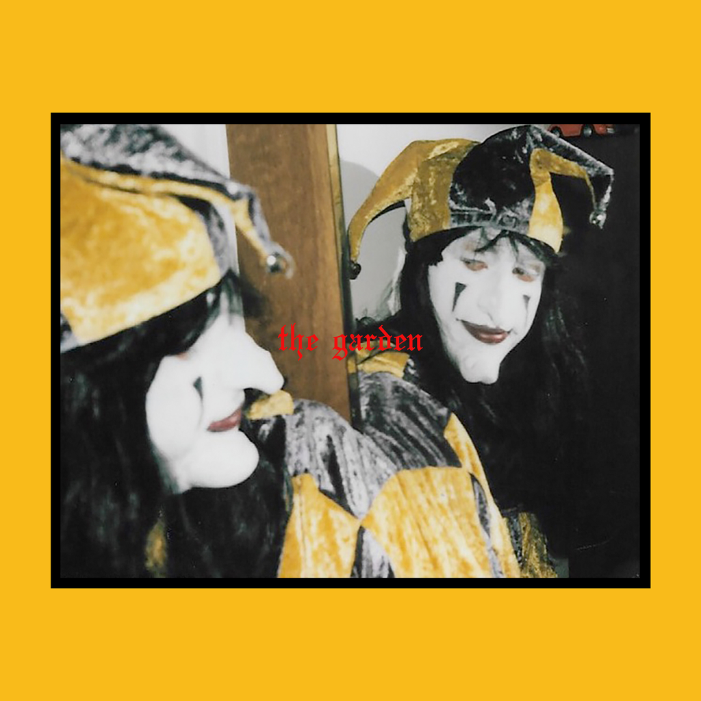
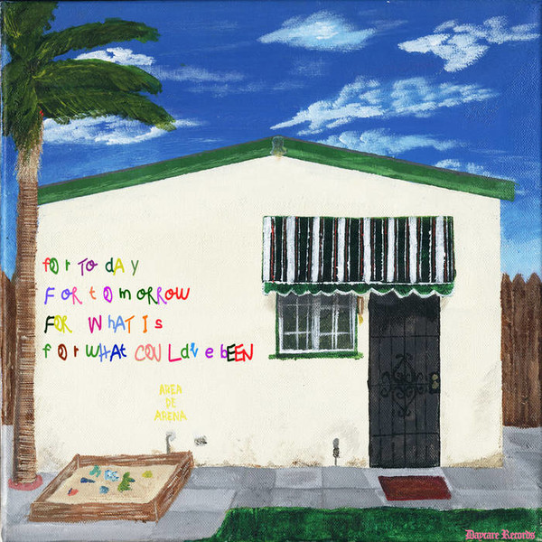

Posted on October 24th 2022 by Vanessa

The Garden
The Garden is an American experimental rock band from Orange County, California, formed in 2011 by twin brothers Wyatt and Fletcher Shears.[1] The duo released their debut album The Life and Times of a Paperclip in 2013, with several smaller releases following.

Red Pears
The Red Pears are an indie/alternative band from El Monte, CA. The band consists of Henry Vargas on guitar and vocals, Jose Corona on drums, and their good friend Patrick Juarez helping on bass
| fb | T | Y |
|---|